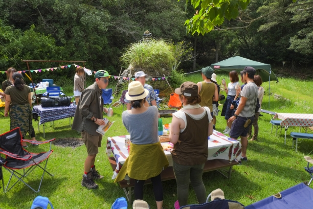
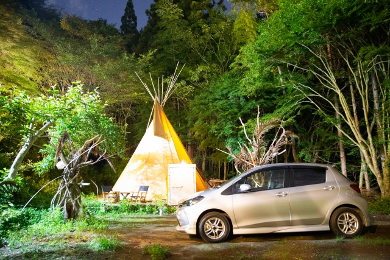
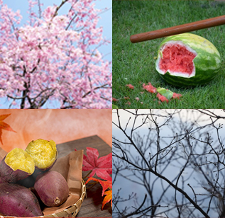

アウトドアベース犬山
ってどんなとこ？

愛知県のキャンプ場＆オートキャンプ場、ティピー、ドッグラン、バーベキュー場など
犬山キャンプ場は大人も子どももワンコも楽しめるアウトドア基地
名古屋市内から国道41号経由で約50分、高速道路経由ならば名古屋ICから約30分！
思い立ったらすぐ行ける、お手軽キャンプ場！スタッフ常駐で初心者も安心です。
豊富な体験

餅つき体験：１升7,000円、２升目からは追加で2,000円（１日１組限定、要予約）
ドラム缶ピザ焼き体験：6,000円、φ27～30㎝のLサイズが４枚分（１日１組限定、要予約）
燻したて！ふわとろスモークチーズ体験：1,500円 所要時間20分程度の（１日５組限定）
その他コイ釣り体験、 薪焚き体験、 キャンプファイヤー等もございます。
季節のイベント

４月の中旬頃には桜が満開に☆特にティピーサイトに桜が多く、オススメです。
夏は昆虫採取や、キャンプファイヤーしながらの花火も夏キャンプの醍醐味です。
１０、１１月の土日祝は受付前で石焼き芋サービスをおこなっています。
冬はとても寒く池の水も凍ってしまう程ですがティピー内での焚き火宴会はビックリするくらい、暖かいですよ。
重要なお知らせ
- １０名を超える団体様、愛知と岐阜以外からお越しのお客様のご予約はお受け致しておりません。 （グループを分けてご予約される場合も合計１０名を超えるとご利用いただけません。）
- しばらくの間、コインシャワー、薪焚き体験風呂、餅つき、ピザ焼き体験、キャンプファイヤーはご利用いただけません。現在、オートサイトのトイレも閉鎖しております（中央トイレのみ利用可）。オートサイトのお客様は距離が離れますのでご了承下さい